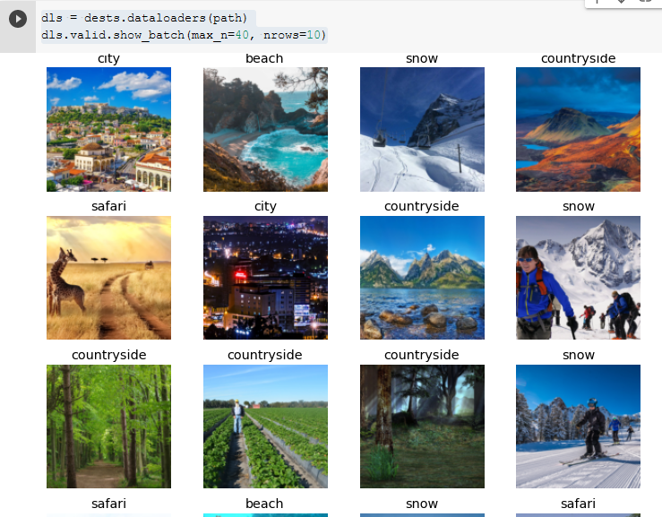
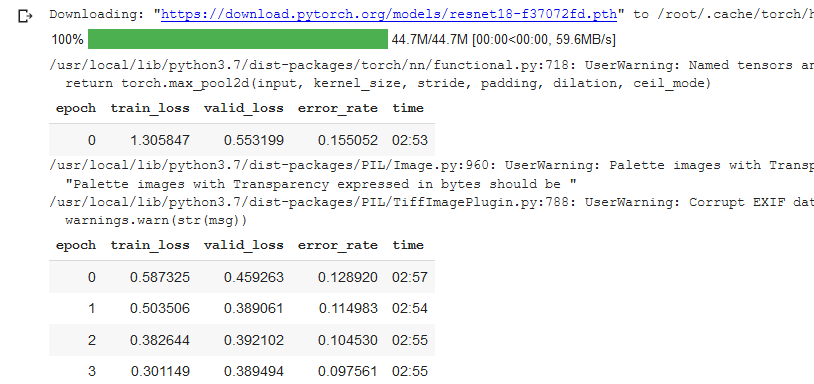
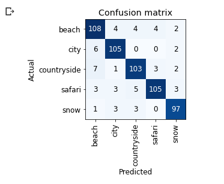
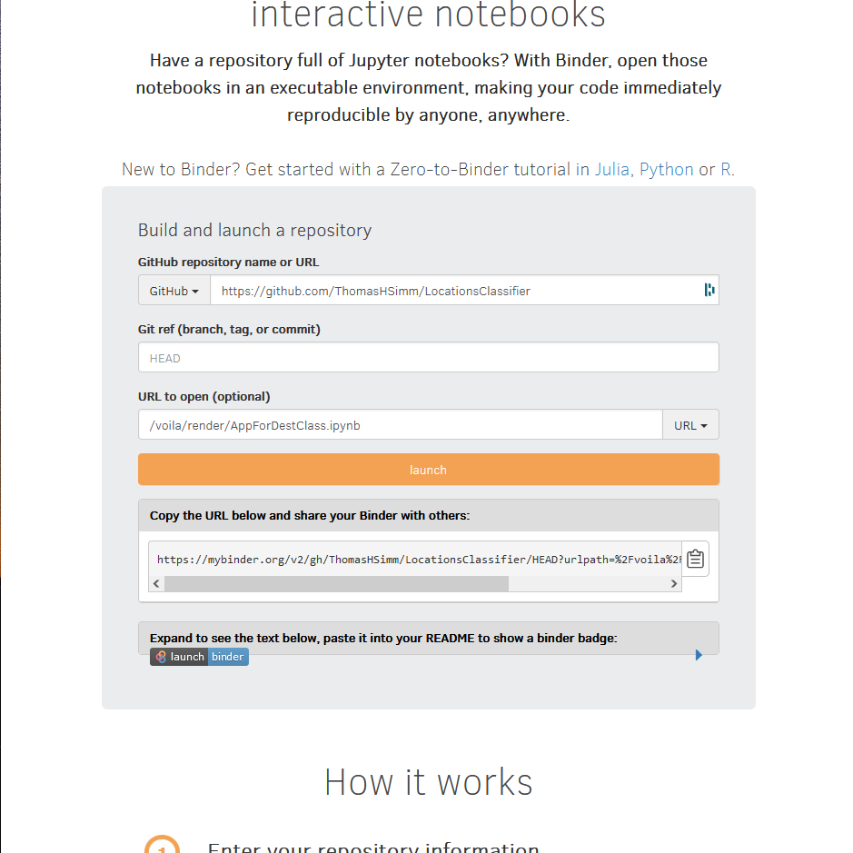

!pip install -Uqq fastbook
import fastbook
fastbook.setup_book()

Building a Classifier App on the web
Creating an image classifier app that is on the net! Using Jupyter notebooks, FastAi, Binder and Voila
- toc:true
- branch: master
- badges: true
- comments: true
- author: Thomas H. Simm
- categories: [fastai, jupyter, Binder, Voila, myBinder, ThomasHSimm]
The Model Part
The Python Part Of the App
The Binder Part
1) The model Part
The model was run on https://colab.research.google.com with a GPU
Necessary to have a GPU for time
Some imports and installs
from fastbook import *
from fastai.vision.widgets import *Gets Azure search key to use Bing search API
key = os.environ.get('AZURE_SEARCH_KEY', 'keygoeshere')I’m going to do a classifier for holiday types
destas={'beach':{'beach','tropical','sea','beach holidays'},
'snow':{'ski','snowboard','snow','ski holidays'},
'countryside':{'lakes mountains','countryside','forest','fields'},
'city':{'city','cities','bars','buildings'},
'safari':{'safari','safari holidays','safari park','safari africa'}}Creates a folder containing images for each type
Need to add to dir with different searches not delete and add new stuff each time
For eaach holiday type- go through the search topics and add the results together before downloading images to the holiday type folder
This gives 600 pics per holiday type
path = Path('Destinations')
try:
path.mkdir()
except:
passfor o in destas:
dest = (path/o)
dest.mkdir(exist_ok=True)
for ii,oo in enumerate(destas[o]):
# print(oo)
results = search_images_bing(key, f'{oo}')
if ii>0:
resultsALL = L(resultsALL,results).concat()
else:
resultsALL=results
print(o)
print(np.shape(resultsALL))
download_images(dest, urls=resultsALL.attrgot('contentUrl'))Create a data block for fastai
fns = get_image_files(path)
dests = DataBlock(
blocks=(ImageBlock, CategoryBlock),
get_items=get_image_files,
splitter=RandomSplitter(valid_pct=0.2, seed=42),
get_y=parent_label,
item_tfms=Resize(128))get rid of failed images
failed = verify_images(fns)
failed.map(Path.unlink)
failedHave a look at the images
dls = dests.dataloaders(path)
dls.valid.show_batch(max_n=40, nrows=10)
create a dls for the learner
- randomresizedcrop
- default aug transforms
dests = dests.new(
item_tfms=RandomResizedCrop(224, min_scale=0.5),
batch_tfms=aug_transforms())
dls = dests.dataloaders(path)Do the learning over 4 epochs
learn = cnn_learner(dls, resnet18, metrics=error_rate)
learn.fine_tune(4)
Confusion matrix
interp = ClassificationInterpretation.from_learner(learn)
interp.plot_confusion_matrix()
Save the model (saves as export.pkl)
learn.export()2) The App in python
Some imports
# Classifier App
# THSimm
from fastai.vision.all import *
from fastai.vision.widgets import *
import urllib.requestCreate parts of the widget
learn_inf = load_learner('export.pkl')
btn_upload = widgets.FileUpload()
out_pl = widgets.Output()
out_pl.clear_output()
lbl_pred = widgets.Label()Function occurs on click upload
def on_click_classify(change):
img = PILImage.create(btn_upload.data[-1])
out_pl.clear_output()
with out_pl: display(img.to_thumb(500,500))
pred,pred_idx,probs = learn_inf.predict(img)
lbl_pred.value = f'Prediction: {pred}; Probability: {probs[pred_idx]:.04f}'btn_upload.observe(on_click_classify,names=['data'])What is displayed
#hide_output
text ='Select your plane'
display(VBox([widgets.HTML(value = f"<h1><font color='Black'>{text}</h1>\
<ol text-align: center><font color='Black'>\
<li>Beach</li>\
<li>Snow</li>\
<li>Countryside</li>\
<li>City</li>\
<li>Safari</li>\
</ol>"),
btn_upload, out_pl, lbl_pred]) )3) The Binder Part
Binder
mybinder.org is an online service for building and sharing reproducible and interactive computational environments from online repositories. Under the hood, it is a federation of BinderHub deployments that are maintained by the Binder community. It serves as both a public service and a demonstration of the BinderHub technology, though it is by no means the only BinderHub in existence. If you’re interested in deploying your own BinderHub for your own uses, please see the BinderHub documentation and don’t hesitate to reach out to the Binder community.
https://mybinder.readthedocs.io/en/latest/introduction.html#preparing-a-repository-for-binder
Basically allowing us to put code online
Voila
The 2nd import part is Voila which allows us to hide the code and just display outputs
https://voila.readthedocs.io/en/stable/using.html
Method:
- Create repository on github that is public, containing the ipynb file and a requirements.txt file
- Then go to binder https://mybinder.org/
- Fill in form as shown below
In requirements.txt:
voila fastai packaging ipywidgets

The result
https://mybinder.org/v2/gh/ThomasHSimm/LocationsClassifier/HEAD?urlpath=%2Fvoila%2Frender%2FAppForDestClass.ipynb
https://tinyurl.com/LocClassAppThomasHSimm